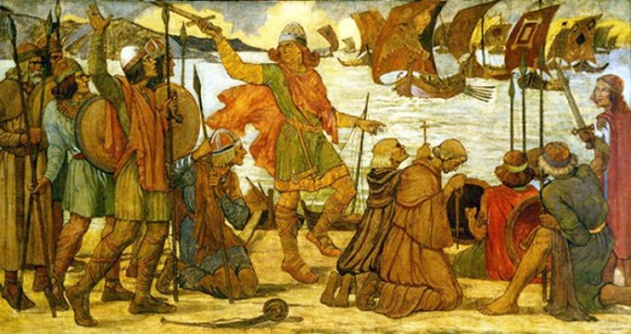

After Ragnar Lothbrok was captured and killed by King Aella
(although some other historical accounts tell us that he died of a mysterious disease, probably dysentery),
Bjorn Ironside attacked Kingdom of Northumbria with his brothers to avenge their father.
Ivar the Boneless did not take part in these initial attacks and said he knew this was how Ragnar would
die in the end.
He made peace with and asked King Aella to give him some land only as large as an ox’s hide can cover.
King Aella thought of Ivar as a fool and granted his request. According to the story,
Ivar the Boneless cut the hide in such a fine way that, in the end, it was possible for
Viking men to build a fort in the land King Aella provided.
It is told the town established by Ivar is York although some accounts suggest
York was already established and Ivar took it from English forces (kindly read below for more detailed information).
Ivar was not only a wise but also a generous leader and that is how he managed to recruit many
local English warriors for his cause weakening King Aella’s forces significantly over time.
When Ragnar Lothbrok’s other sons led by Bjorn Ironside attacked the Kingdom of Northumbria for the second time
(called by Ivar for an attack according to some sources), Ivar joined forces with them, conquered the
kingdom and captured King Aella.
Ivar suggested that King Aella should be killed by carving “a blood eagle” on him.
As depicted in History Channel’s TV series, Vikings, the blood eagle is performed by cutting open a person’s ribs,
pulling them to the sides like wings, pulling out his lungs and spreading salt on the wounds.
According to some other accounts, Ivar the Boneless crossed the North Sea and invaded
East Anglia with his brothers Halfdan Ragnarsson and Ubbe in 865. East Anglians did not resist,
made peace with the Vikings and even gave them horses.
Ivar and the Great Heathen Army carried on north the next year and captured the city of York.
The Kingdom of Northumbria was struggling with civil war at the time since King Aella
has usurped the throne from King Osberht who has been ruling the kingdom for 18 years.
Facing a common enemy, King Aella and King Osberht joined forces, attacked York and penetrated the city walls.
Vikings killed everyone who entered the city. Both kings were killed as a result of this failed attempt.
Ivar assigned King Egbert to rule the kingdom.
The Great Heathen Army’s Progress in England
Ivar and his men progressed to conquer the Kingdom of Mercia.
The Great Heathen Army captured Nottingham where they spent winters.
King Burgred of Mercia asked King Ethelred of Wessex and his brother
Alfred for help in defeating “the brutal heathens”.
Joining forces with Wessex, the army of Mercia laid siege to Nottingham.
Ivar was a fearless warrior but also a wise ruler. After seeing his forces were
largely outnumbered, he made peace with the Kingdoms of Mercia and Wessex and returned to York in 868.
Capturing Dumbarton Rock in Scotland
Ivar ruled Dublin together with Olaf the White.
Together, they laid siege to Dumbarton Rock (also known as the Clyde Rock)
in Scotland and although the garrison resisted for four months,
it had to surrender when the Viking army cut off the water supply.
Vikings pillaged the city. Ivar and Olaf remained in Strathclyde for winter and returned to
Dublin with slaves and booty they acquired in Scotland. They forced Constantine I,
King of Scotland to pay tribute.